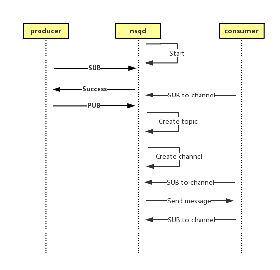

第一篇文章提到了，本着从简单到复杂的原则，我们会从nsqd开始对NSQ进行分析。
nsqd组成
先从官网上偷一张示意图

从图中可以看出
- 一个topic下对应多个channel
- 一个channel下对应多个consumer
- 每个channel都会获得所有消息
- 单个channel下的消息只会被一个consumer获得
- 如果一个channel的消息一直不被消费，会一直堆积
我们可以得出以下几点推论：
- 如果两个消费者都想要获得全部消息，那么他们必须在独立的channel下。比如硬盘备份和打印metrics。
- 即使consumer在channel创建之后才注册，在堆积不超过nsqd前提下，仍然能获取到所有消息。
同样也会有疑问，比如：
- 每个channel的堆积上限是多少？超过上限之后处理逻辑是什么？
- 多个consumer消费同一个channel采用什么样的分配策略，是否公平？
- 从topic到多个channel，从channel到多个consumer，如何保证消息不会丢失？
- 如何保证同一channel下一条消息不会发送到多个consumer?
带着这些问题，我们进入代码的世界。
topic
topic的代码很好找，在nsqd/topic.go里面。首先看看topic的定义：
type Topic struct {
// 64bit atomic vars need to be first for proper alignment on 32bit platforms
messageCount uint64
sync.RWMutex
name string
channelMap map[string]*Channel
backend BackendQueue
memoryMsgChan chan *Message
exitChan chan int
channelUpdateChan chan int
waitGroup util.WaitGroupWrapper
exitFlag int32
idFactory *guidFactory
ephemeral bool
deleteCallback func(*Topic)
deleter sync.Once
paused int32
pauseChan chan bool
ctx *context
}
不妨先根据字面意思和之前的分析来猜测一下，Topic里面各个字段的含义。 messageCount毫无疑问是消息的条数；name是topic的名字；channelMap是用来存储不同channel的；sync.RWMutex是读写锁，猜测是控制多个channel的同步用的……
几个chan的含义都比较明显，比较奇怪的是backend这个字段，看起来略显突兀，似乎和队列的堆积有些关系。ephemeral用来标志topic是临时有效的，不知道会有怎么样的处理呢？
那么从topic的生命周期来寻找答案吧。
create topic
func NewTopic(topicName string, ctx *context, deleteCallback func(*Topic)) *Topic {
t := &Topic{
name: topicName,
channelMap: make(map[string]*Channel),
memoryMsgChan: make(chan *Message, ctx.nsqd.getOpts().MemQueueSize),
exitChan: make(chan int),
channelUpdateChan: make(chan int),
ctx: ctx,
pauseChan: make(chan bool),
deleteCallback: deleteCallback,
idFactory: NewGUIDFactory(ctx.nsqd.getOpts().ID),
}
if strings.HasSuffix(topicName, "#ephemeral") {
t.ephemeral = true
t.backend = newDummyBackendQueue()
} else {
dqLogf := func(level diskqueue.LogLevel, f string, args ...interface{}) {
opts := ctx.nsqd.getOpts()
lg.Logf(opts.Logger, opts.logLevel, lg.LogLevel(level), f, args...)
}
t.backend = diskqueue.New(
topicName,
ctx.nsqd.getOpts().DataPath,
ctx.nsqd.getOpts().MaxBytesPerFile,
int32(minValidMsgLength),
int32(ctx.nsqd.getOpts().MaxMsgSize)+minValidMsgLength,
ctx.nsqd.getOpts().SyncEvery,
ctx.nsqd.getOpts().SyncTimeout,
dqLogf,
)
}
t.waitGroup.Wrap(func() { t.messagePump() })
t.ctx.nsqd.Notify(t)
return t
}
好吧，搞了半天也没搞定代码显示行号的问题。。。。。。
关注第14行，这里有对ephemeral的判断，如果topicName有这个后缀，那么backend就是假的，否则就会起一个diskqueue来做backend。从diskqueue的名字猜测，这是一个存储在磁盘上的队列。因此我们之前的猜测大体是正确的：topic的消息太多时，会存在磁盘里面。对这个diskqueue的分析，我们以后再做。
再看一个有意思的用法
func (w *WaitGroupWrapper) Wrap(cb func()) {
w.Add(1)
go func() {
cb()
w.Done()
}()
}
这是waitGroup的Wrap操作，把cb封装起来。注意这里没有Wait操作，所以并不会阻塞。那么阻塞在哪里呢？搜代码可以发现，在topic的exit操作中。
也就是说，这个waitGroup的作用是：在退出topic之前，一定要保证cb（这里是messagePump）执行完成。从名字上看，messagePump就是topic不断往各个channel发送消息的过程，这个我们留在后面分析。
create channel
func (t *Topic) GetChannel(channelName string) *Channel {
t.Lock()
channel, isNew := t.getOrCreateChannel(channelName)
t.Unlock()
if isNew {
// update messagePump state
select {
case t.channelUpdateChan <- 1:
case <-t.exitChan:
}
}
return channel
}
代码很清楚：给定一个channel name，如果对应的channel已经存在，就返回，否则创建一个新的。对于topic也有一样的逻辑（在nsqd中）。所以如果没有对topic和name做别的限制，你想怎么用就怎么用。这里的channelUpdateChan是用来告诉messagePump：我又创建了一个channel，下次别忘了把消息发给它。
接收消息
topic创建好之后，producer就可以往这个topic下面发消息了。
func (t *Topic) PutMessage(m *Message) error {
t.RLock()
defer t.RUnlock()
if atomic.LoadInt32(&t.exitFlag) == 1 {
return errors.New("exiting")
}
err := t.put(m)
if err != nil {
return err
}
atomic.AddUint64(&t.messageCount, 1)
return nil
}
func (t *Topic) put(m *Message) error {
select {
case t.memoryMsgChan <- m:
default:
b := bufferPoolGet()
err := writeMessageToBackend(b, m, t.backend)
bufferPoolPut(b)
t.ctx.nsqd.SetHealth(err)
if err != nil {
t.ctx.nsqd.logf(LOG_ERROR,
"TOPIC(%s) ERROR: failed to write message to backend - %s",
t.name, err)
return err
}
}
return nil
}
这里的逻辑也很简单，消息来到后，尝试往memoryMsgChan里面写。如果阻塞了，就往backend里面写。所以，不需要担心消息写不下，只要磁盘有空间就没问题。那么怎么知道堆积了多少消息呢？
func (t *Topic) Depth() int64 {
return int64(len(t.memoryMsgChan)) + t.backend.Depth()
}
那么写往memoryMsgChan的消息又哪儿去了呢？很显然，要发送到每个channel去了。怎么发的呢？是的，messagePump！
消息转发
终于到消息转发了，激不激动？
func (t *Topic) messagePump() {
var msg *Message
var buf []byte
var err error
var chans []*Channel
var memoryMsgChan chan *Message
var backendChan chan []byte
t.RLock()
for _, c := range t.channelMap {
chans = append(chans, c)
}
t.RUnlock()
if len(chans) > 0 {
memoryMsgChan = t.memoryMsgChan
backendChan = t.backend.ReadChan()
}
for {
select {
case msg = <-memoryMsgChan:
case buf = <-backendChan:
msg, err = decodeMessage(buf)
if err != nil {
t.ctx.nsqd.logf(LOG_ERROR, "failed to decode message - %s", err)
continue
}
case <-t.channelUpdateChan:
chans = chans[:0]
t.RLock()
for _, c := range t.channelMap {
chans = append(chans, c)
}
t.RUnlock()
if len(chans) == 0 || t.IsPaused() {
memoryMsgChan = nil
backendChan = nil
} else {
memoryMsgChan = t.memoryMsgChan
backendChan = t.backend.ReadChan()
}
continue
case pause := <-t.pauseChan:
if pause || len(chans) == 0 {
memoryMsgChan = nil
backendChan = nil
} else {
memoryMsgChan = t.memoryMsgChan
backendChan = t.backend.ReadChan()
}
continue
case <-t.exitChan:
goto exit
}
for i, channel := range chans {
chanMsg := msg
// copy the message because each channel
// needs a unique instance but...
// fastpath to avoid copy if its the first channel
// (the topic already created the first copy)
if i > 0 {
chanMsg = NewMessage(msg.ID, msg.Body)
chanMsg.Timestamp = msg.Timestamp
chanMsg.deferred = msg.deferred
}
if chanMsg.deferred != 0 {
channel.PutMessageDeferred(chanMsg, chanMsg.deferred)
continue
}
err := channel.PutMessage(chanMsg)
if err != nil {
t.ctx.nsqd.logf(LOG_ERROR,
"TOPIC(%s) ERROR: failed to put msg(%s) to channel(%s) - %s",
t.name, msg.ID, channel.name, err)
}
}
}
exit:
t.ctx.nsqd.logf(LOG_INFO, "TOPIC(%s): closing ... messagePump", t.name)
}
在一个比较大的for循环里，messagePump对几类消息做了不同的处理
- memoryMsgChan或者backendChan，表示真实的消息内容，区别在于后者是编码后存入磁盘的，所以需要多一道解码的工序。
- channelUpdateChan，前面提到过，这里是用来刷新channel的。
- pauseChan，pause和unpause都通过这个传进来，用于控制topic的消费。
- exitChan，退出（想想之前waitGroup)。
从memoryMsgChan或者backendChan拿到消息之后，自然是要写入channel的。根据消息是否deferred，有两种不同方式：
- 如果不是deferred，直接写入channel
- 否则写入channel的deferred priority queue
这里有个小细节，因为要发送到n个channel，原本已经有一个message了，所以把这个message发送到第0个channel，可以减少一次复制的开销。 从这里可以看到为什么每个channel都能获得所有消息了：他们得到的都是一份拷贝，并不是共享一份消息，这样各个channel之间就不会互相干扰了。
退出
topic有两种退出方式
- 被delete，这种情况下清空并删除所有channel，通知nsqlookupd本topic已经被删除了。
- 被正常close，这种情况下需要把所有数据都写入磁盘，然后关闭所有channel退出。
全景图
前面我们只是介绍了topic在整个生命周期中与别的部分进行的交互，但是还缺乏上层对topic的管理，下图描述了整个流程。 
注意图中consumer注册到nsqd可以发生在nsqd启动后的任意时刻。
小结
本文跟踪了nsqd中topic的整个生命周期，分析了topic与channel的交互流程。 现在我们可以尝试着回答开始提出的问题的一小部分
- 堆积上限就是磁盘的大小，超过上限的处理策略需要参看diskqueue的处理。
- 单机情况下，每个channel都会收到每条消息的完整拷贝，所以不会丢失。多机的情况容以后分析。
接下来两篇文章将会分析diskqueue和channel。